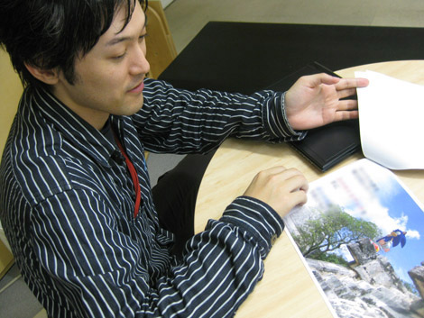
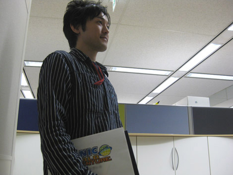

『遂に発売♪ 橋本Dとハミだし！(後編)』
2009年02月19日
皆さまこんにちは！ マツバラです！
いよいよ！
やっっと！！ 本日！！
PS3/Xbox360版『SWA』発売です！！
わー！ きゃー！
遂に皆さまのお手元に『SWA』が、と思うと
興奮が止まりません！
ヨシノです。
今日ばかりは、
マツバラの暴走を止められる気がしません。
ご購入者の皆さま1人1人に
お礼状を配ってまわりたいくらいです！！
いや、迷惑だから。
今回は、前回に引き続き、橋本ディレクターに
開発中のお話を聞くんでしょ。
橋本D ： 皆さん、こんにちは。
『SWA』ディレクターの橋本です。
もう『SWA』で遊んでいただけているでしょうか。
橋本さん、
前回は原案作成のきっかけを聞きましたけど、
次は開発の苦労などを思い起こしてくださいませ。

前回に引き続き、原案書を見ながらのトーク。
橋本D ： 意外と凄く苦労したのは、
開発環境の整備かな。
ゲーム開発ツールの作成とか、
ライブラリの整備とか……
もうちょっと、
わかりやすいところでお願いします！
橋本D ： うーん(笑)
そうだなあ、やっぱり、
ステージのレベルデザインには徹底的にこだわった。
レベルデザインというと、
ステージ構成の作成そのもののことですね！
「ここに敵がいて、ここにバネがあって、ここは坂で……」
っていうステージ内容を決める作業のことです。
橋本D ： 最高の「ソニック」のために、って。
登場するステージのうち、「スパゴニア」「マズーリ」などは
長い時間を投入してほぼ完成しかけたステージを
全部破棄して、最初から作り直したりしたよね。
そ……そうでしたね……
そのときの岡田先輩の涙目が忘れられません。
デザインチームの方々も泣いてました。
スケジュールもギリギリを極めて、
何度も「このゲーム、本当にできるの！？」って
思っちゃいました。
開発末期の戦場っぷりはすさまじかったですね。
いつ遺書を書こうかとドキドキしてました。
橋本D ： 皆、本当に頑張ってくれました。
でも！ その甲斐あって、
とても良質なゲームができたと思っています。
はい。
私も、皆さまに自信を持って勧められます。
それでは最後に、橋本さん！
ここのブログをご覧の皆さまに、
何かひとことお願いします！

橋本D ： 「ソニック」らしさをしっかり持ちつつ、今までの「ソニック」とも違う、
未知の快感・感動が体験できる、とてもクオリティの高いゲームになりました。
よろしくお願いします！
……あ、Wii版も引き続きよろしく！
ありがとうございます！
橋本さん、決まってます！
……さて、皆さま。
『SWA』は発売されましたが、このブログはもう少し続きます。
引き続き、ご贔屓のほどを
よろしくお願い致します♪
日時: 2009年02月19日 13:00 | パーマリンク


 ソニックを愛する、元気な『SWA』2年目プランナー。
ソニックを愛する、元気な『SWA』2年目プランナー。 マイペースな『SWA』2年目プランナー。
マイペースな『SWA』2年目プランナー。
 ご意見・ご要望はこちら
ご意見・ご要望はこちら RSS
RSS